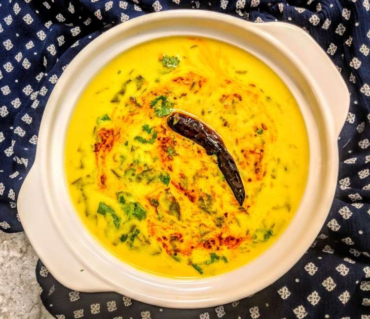

| Servings: 4 | Total Time: 40 mins |
| Category: Curry's | Prep Time: 5 mins |
| Cuisine: Indian | Cook Time: 35min |
| Nutrition (per serving) |
|
| Calories: 99 | Carbohydrates: 15g |
| Fat: 4g | Protien: 2g |
Home > Categories > Item
Palak Kadhi | Spinach Kadhi
Curry's
★★★★★
Palak Kadhi is an Indian main course dish made with fresh spinach leaves cooked with curd and besan (gram flour) curry.
It is enhanced with Indian flavors and tempered with broiled garlic and red stews.
Traditionally Kadhi is a dish consisting of a thick gravy based on besan (chickpea flour) and often contains vegetable fritters called Pakoras.
Palak Kadhi uses freshly cut Spinach leaves instead of fritters.
Ingredients For Palak Kadhi Recipe
For the Kadhi
- 250 gm Spinach Leaves (Palak)
- 1 Cup Plain Curd (Yogurt)
- 1.5 Tablespoons Chickpea Flour (Besan)
- 1 Teaspoon Black Mustard Seeds (Rai)
- 1 Teaspoon Jeera (Cumin Seeds)
- 1 Teaspoon Fenugreek Seeds (Methi Dana)
- 1 Pinch Asafoetida (Heeng)
- 1 Teaspoon Red Chilli Powder
- 1/2 Teaspoon Turmeric Powder (Haldi)
- 1 Teaspoon Salt, or to taste
- 1 Tablespoon Cooking Oil
For The Tempering
- 1 Teaspoon Black Mustard Seeds (Rai)
- 1 Teaspoon Jeera (Cumin Seeds)
- 1 Pinch Heeng (Asafoetida)
- 1 Tablespoon Garlic cloves (Lahsun) or paste
- 2 Whole Dried Red Chillies (Sookhi Lal Mirch)
- 2 Teaspoon Ghee (Indian Clarified Butter)
Procedure
- Take 1 cup curd (Yogurt) in a bowl along with 4-5 cups of water and whisk it
- Add Besan (Gram Flour) to the bowl
- Mix well so that there are no lumps in the besan
- Heat the oil in a deep heavy bottomed pan and add Rai (Mustard Seeds) and let it crackle
- Then add Jeera (Cumin Seeds), Methi Dana (Fenugreek seeds) and Heeng (Asafoetida)
- Fry for few seconds and add red chilli powder & turmeric powder and cook for few seconds
- Add chopped Spinach Leaves (Palak) to the pan, Cook for 2-3 minutes till the leaves wilt and become soft
- Add salt to the pan, add the besan-curd mixture to the pan and stir continuously till the Kadhi mixture comes to a boil
- After it boils, switch to low heat and cook for about 30 minutes stirring occasionally
- For the tempering, heat Desi Ghee (Indian Clarified Butter) in a pan over medium flame
- Add Rai (Mustard Seeds) and let it crackle
- Then add Jeera (Cumin Seeds) and Hing (Asafoetida) and cook for a few seconds on low heat
- Add crushed Garlic (Lahsun) and dried whole red chili to the pan and fry for few seconds
- Add Red Chilli powder and allow it to simmer for few seconds
- Pour this tadka over the Palak kadhi and mix it well. Delicious Palak Kadhi is ready. Serve it hot with rice or chapati